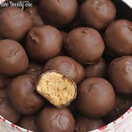

Peanut Butter Balls

Ingredients
- 1 cup creamy peanut butter
- 6 tbsp unsalted butter
- 2 cups powdered sugar
- 16oz chocolate bark
Steps
- Mix together peanut butter and butter until creamy. Slowly mix the powdered sugar into the peanut butter and mix until combined
- Cover the peanut butter mixture in a small bowl and refrigerate for a few hours until solid
- Once ready, scoop 1 inch sized balls and roll them into shape. Place on a cookie sheet and put in the freezer
- Heat the chocolate in the microwave and dip the balls into the chocolate
- Drop the balls onto a sheet of wax paper
- Place back in the microwave
The easiest and tastiest dessert!